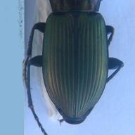
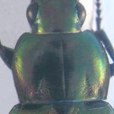
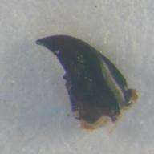
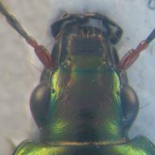

ABOUT MACHINE LEARNING
Machine-learning algorithms use statistics to find patterns in massive amounts of data. And data, here, encompasses a lot of things—numbers, words, images, clicks,
. If it can be digitally stored, it can be fed into a machine-learning algorithm.
Although machine learning is mostly linked to industrial platforms such as Google, Netflix, youtube...
Machine learning has demonstrated potential in analyzing large, complex biological data.
In order to more completely understand complex biological phenomena, massive amounts and multiple types of ‘big’ data are generated from complicated studies.
In our case, bilogists have already manually indicated landmarks positions on images of different part of the beetles (key-marks), and then thanks to a neural network model, predicted landmarks were ceated on the images.
The point is to compare manual landmarks to predicted landmarks by displaying charts in the statistical section that shows the evolution of the difference between the distance for each landmark of all the images.For example,
the first chart will show all the distance difference in all the images corresponding to the studied part of the beetle on the L1 position.
ALL ABOUT US
On this platform, you'll be able to visualize
how machine learning can efficiently substitute bioligical experiences and its expenses.
Dear user, you are entitled to do three main steps
1 |
Upload an image of a beetle part (elytra for example) |
2 |
Upload a tps file which contains the pixel coordinated of landmarks(both predicted and manual) |
3 |
Upload a csv file which contains columns corresponding to the x and y coordinates of manual and predicted landmarks as well as the distance between them |
ABOUT BEETLES

Beetles are a group of insects that form the order Coleoptera. Their front pair of wings are hardened into wing-cases, elytra, distinguishing them from most other insects.
A beetle has five essential parts :
ELYTRA, PRONOTUM, RIGHT MANDIBLE, LEFT MANDIBLE, HEAD.
Elytre

Elytra are the modified, hardened front wings of beetles.The elytra act as protective wing-cases for the hind wings underneath, which are used for flying. To fly, a beetle opens the elytra and then extends the hindwings.
Pronotum

The prothorax is the foremost of the three segments in the thorax of a beetle.Its scelerites are
pronotum,
prosternum and the
propleuron on each side.So, pronotum defines the upper surface of the thorax.
Mandibles

The Mandibles are the insect mouthpart.Their function is typically to grasp, crush, or cut the insect’s food, or to defend against predators or rivals.
Head

Unlike the thorax and abdomen, the head is not segmented. Found on the head are the eyes, antennae and the mouthparts. Inside the head is the “brain” that is made up of “ganglia” which are clusters of nerve cells.
From the brain a double nerve cord runs back along the bottom of the body and coordinates activities like feeding and flying.